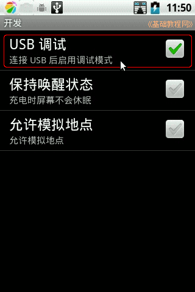
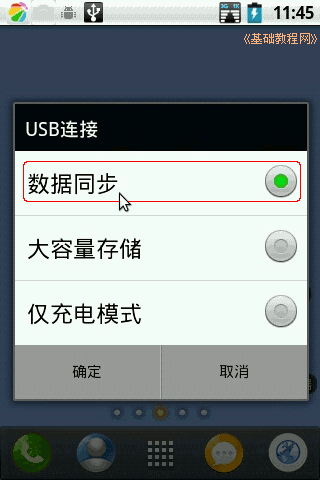
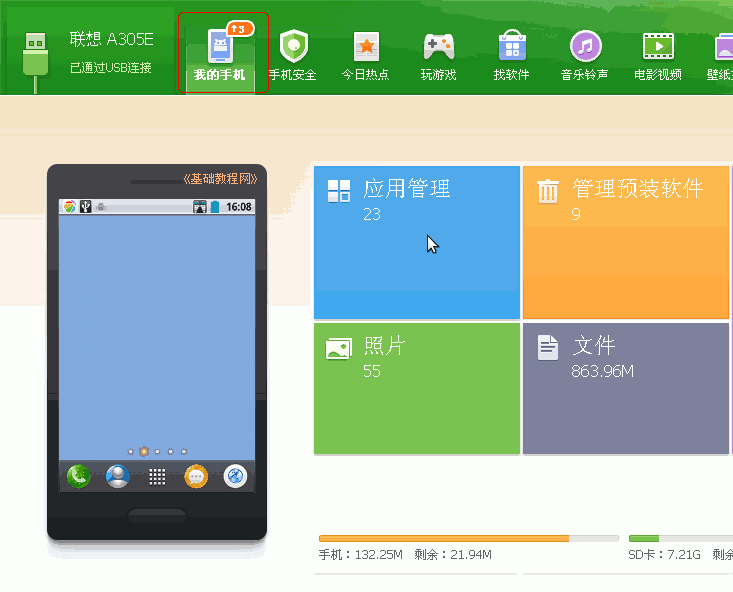
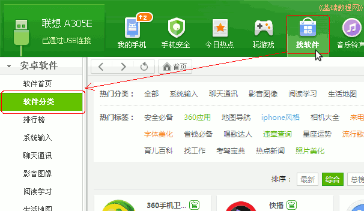
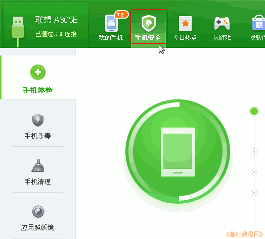
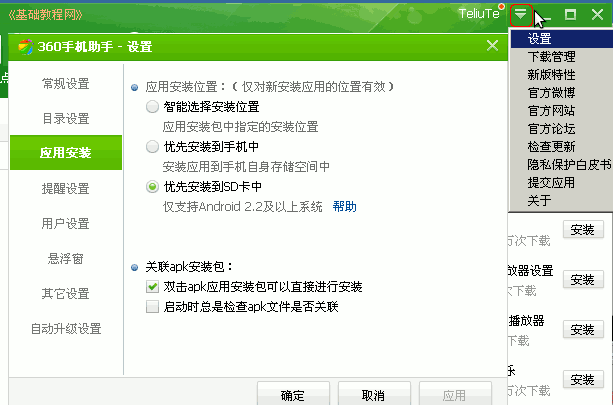

Android 安卓智能手机操作教程
作者：TeliuTe 来源：基础教程网
十五、手机助手和调试模式 返回目录 下一课本节学习使用手机助手，如豌豆荚或360助手的使用；
1、调试模式
1）到360的官网（http://sj.360.cn）上下载手机助手电脑版的安装包，安装到电脑上，手机版的安装到手机上；
2）在手机上打开系统设置－应用程序－开发－USB调试，打勾启用；

3）用数据线连接手机和电脑，手机上选择USB连接为“数据同步”模式，在电脑上打开手机助手，左上角显示正在连接；

4）连接好以后，点击工具栏上的“我的手机”，就可以查看手机概况；

5）点击里面的“应用管理”，就可以查看和卸载已安装的应用软件，包括名称、大小、位置等；
6）点击工具栏上的“找软件”，再在左侧点“软件分类”，可以搜索安装所需的应用软件；

7）点击工具栏上的“手机安全”，可以查杀病毒和清理垃圾；

8）点右上角一个下拉箭头，选择“设置”菜单，可以详细设置手机助手；

本节学习了手机助手的基础知识，如果你成功地完成了练习，请继续学习下一课内容；
本教程由86团学校TeliuTe制作|著作权所有
基础教程网：http://teliute.org/
美丽的校园……
转载和引用本站内容，请保留作者和本站链接。